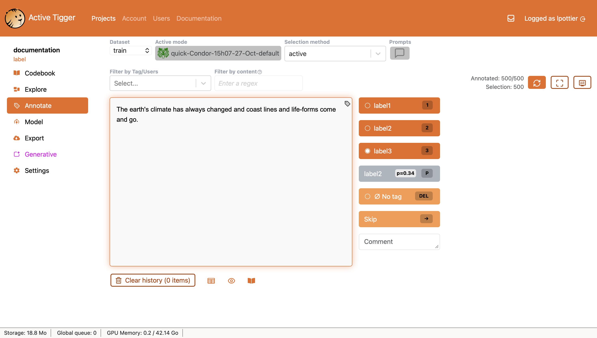

Annotate page
The Annotate panel is the main page of the app to annotate your data.

Selecting text inputs to annotate
There are several ways to select a subset of text inputs.
- Dataset: select the dataset on which you are working (train, validation or test).
- Selection method: change the order in which elements are shown.
- fixed (in the order of the original dataset)
- random
- Active Mode: toggling this mode allows you to choose a model for Active Learning (more about the concept, more about its implementation). This unlocks new selection methods:
- max LABEL: orders the text inputs by decreasing probability to be of a given LABEL.
- active: orders the text inputs by decreasing entropy (prioritizing uncertain predictions).
- active LABEL: orders the text inputs by decreasing entropy with regard to this specific LABEL.
- Prompts: only displays elements matching a specific prompt. Elements are ranked by descending similarity with the prompt.
- To use this mode: type a prompt, then Create prompt, and exit the window. This unlocks a new selection method, prompt (embedding) which allows you to then select the prompt you have typed.
- The Max similarity slider allows you to display only the elements with at most the selected similarity with the prompt. Lowering similarity can be helpful to find related but not identical items.
- Filter by Tag/Users: only displays elements with specific characteristics
- being labeled with LABEL
- being labeled by a specific user
- with comments: elements which have a comment
- wrong prediction: elements for those there is a disagreement between annotation and prediction
- predicted as LABEL by current active model
- Filter by content: only displays elements matching a search / RegEx expression (more about RegEx).
- To search in the context variables, use
CONTEXT=[your regex]before the search - It is possible to use a query for more complex selection with under the hood Pandas query ; use
QUERY=[your query].
- To search in the context variables, use
- Filter by projection: when inputs are selected via a frame in the Visualization tab of the Explore page, you can Lock on projection to only display the inputs contained in the frame.
Annotation panel
The center of the page displays the text box as well as several buttons.
- LABEL : tag the text input with the given LABEL and move on to the next text input.
- No tag : if a tag exists, remove it and move on to the next text input.
- Skip : move on to the next text input without altering the annotation.
- Add a comment to your annotation in the comment text box.
- If you want to access the Codebook during annotation, click on .
Most actions can be triggered with hotkeys (1,2,3 .. → or DEL).
Display parameters
opens a modal to modify the annotation panel display.
- Annotation History: if ticked, displays previous annotations of the session.
- Existing annotation: if ticked, displays existing annotation of the current text input.
- Show prediction: if ticked, displays a button for the label predicted by the model (bound to the hotkey "P") when Active Mode is on.
- Show prediction stats: if ticked, displays the model's probability as well as the predicted label (if Active Mode is on).
- Element history: if ticked, displays previous tags of the current text input at the bottom of the text box.
- Mean annotation time: if ticked, displays at the bottom of the screen the mean annotation time for the future annotations performed during the session. If the history is cleared, the annotation time is reset.
- Tokens: approximate an estimation of text truncation. Given a window size, text inputs exceeding this limit will be written in another color to emphasise possible truncation. This parameter is only visual and has no other impact.
- Height: set the height of the text box.
- Width: set the width of the text box.
- Force bottom labels: if ticked, displays the label buttons horizontally under the text box.
- Force complete labels: if ticked, adapts the label buttons' font size so that the whole label is legible.
- Highlight first
- Highlight words in the text Similar to Filter by content but without removing items not containing the regex expression.
Annotation history
The last hundred inputs annotated are visible underneath the annotation panel. For Active Learning to work best, the application retains, at all times, the list of text inputs annotated. This way, unless you Clear history, these elements will not be shown again.
- You can choose to view your annotation history as cards (default) or as a table (by clicking on ).
- You can also hide the history without clearing it by clicking on .
Warning
Changing scheme will automatically clear the history.
Active Learning in practice
Read about the concept of Active learning.
In the Annotate page, you can select a model (quick or BERT) to use its predictions for Active Learning.
This will allow you to see the chosen model's predictions ("guesses") for which category a given element belongs to, allowing you to correct it or confirm this prediction by manual annotation.
To use BERT models in active learning, you must first compute the predictions on the dataset, in the Evaluate tab Compute statistics on current annotations.
When active learning is on, clicking on Model name can allow you to:
- Retrain quick model, either manually ( Retrain now) or every x annotations.
- Change model used for active learning.
- Deactivate active learning ( Deactivate).
Models trained on a reduced number of labels can be used, they will simply ignore unseen labels.
Tip
The selection mode Max LABEL is especially useful in the early stages when the model "fails with confidence". This mode selects the elements on which the selected model makes confident predictions, but these may very well be incorrect. You can correct these predictions by correctly labelling elements in this mode, steering the model toward a correct definition of each label. Conversely, the selection mode Active LABEL picks elements on which the model is least confident in its prediction, allowing you to correct it in the same way. Switching between these modes in the annotations phase is often a helpful way to produce a functioning model faster.
Curate
This section allows you to see agreements and disagreements in existing annotations, both between several users working on the same scheme and between different coding schemes.
In the "Current scheme" tab, disagreements between different users are displayed, meaning cases when several users annotating data in a given project have annotated the same element differently. You can resolve these disagreements by choosing a final label.
In the "Between scheme" tab, you can compare different annotations of the same element between different coding schemes.
Annotate (multi-label)
When applying multiple labels to the same element, the general layout is unchanged. To annotate elements, select one or more labels in the dropdown menu and Validate to save the annotation and move on to the next element.
Annotate (span)
To annotate the text, first select a LABEL, then highlight the text in the text box.
Click on the highlight to remove it.
Validate the annotation to save the annotation and move on to the next text input.